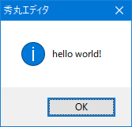
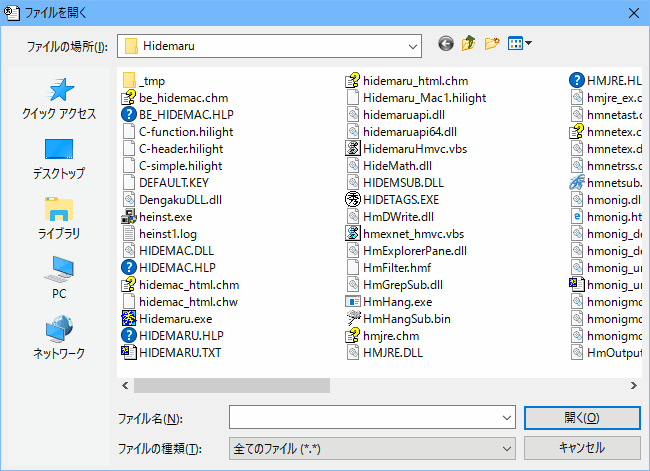

【０】 イントロダクション
【１】 用意するもの
【２】 マクロから呼び出せるDLL関数を作るには？
【３】 とりあえず “hello world”
【４】 ちょっと手を加えてみる
【５】 もう少し複雑なものを作ってみる
【６】 「ファイルを開く」ダイアログを出してみる
【７】 ウィンドウを表示してみる
【８】 作成したDLLのデバッグ
【９】 まとめ
【10】 リンク等
【11】 補足〜浮動小数点数版秀丸エディタ用のDLLについて
【12】 補足〜ワイド文字対応関数について
このＱ＆Ａ集でも至る所で紹介されている秀丸エディタの強力なマクロ機能ですが、 その中でもある意味
もっともブッ飛んだ
ものが、今から解説する 「DLLの関数を利用する機能」でしょう。 DLLは「Dynamic Link Library」の略語、日本語では「動的結合ライブラリ」となりますが、 これは関数やサブルーチンを必要がある時にメモリにロードして、 実行中のアプリケーションから呼び出せるようにするための仕組みです。 で、このDLLのロード＆関数の呼出しをマクロ中からできるわけですが、 自分でDLLを作ってこの機能を利用すれば、 マクロの命令のここが気に入らないとかこんなのが欲しいとか、 あれこれ要望して実現されるのをひたすら待っていた(または諦めていた)
そんな後ろ向きな自分にサヨナラ(笑)
できるわけです。 もっとも、 秀丸エディタのウィンドウや編集中のテキストの内容を直接いじれるわけではないですが、 それでも初期状態のマクロには用意されていない高度なファイル操作や文字列操作、 自分で好きなようにデザインしたダイアログを表示したり… といったことが自由にできるようになるわけですから、
これはもうDLL作るしかない
と思わなきゃウソです(笑)。 まぁとはいえ、 思ったからすぐDLLが作れるほど世の中そう甘くはないわけですが、 やりもしないで諦めてしまうのはもったいない、 と言える程度に割とあっさりと作れてしまうのもまた事実です。 この解説では秀丸マクロ用のDLLを作る際に必要な環境と、 作成時に注意すべき点をいくつか挙げていますが、 それさえクリアすれば
貴方でも明日とはいわず今日からでも始められます！
ってなもんです(怪しげな英会話の教材のキャッチコピーみたいでアレですが(笑))。
まず、この解説はDLLの作成の話が中心なので、使用する言語(ここでは Cまたは C++ 言語)についての知識は、 簡単なツールやサンプルアプリケーションを作れる程度に持っているとして話を進めていきます。
したがって、
ポインタって何ですか？
とか
演算子のオーバーロードってどうやるんですか？
といったことで悩んでいる方は、この解説より先にまず言語自体の参考書を見て勉強してください。
次に、DLLを作るためにはもちろんDLLが作成可能な開発環境(コンパイラetc.)が必要ですが、 フリーソフトウェアのコンパイラがいくつかあります。 その中でWeb 等から現在入手可能で比較的有名なものは以下の通りです。
これらの入手先についてはこちらをご覧ください。 また、Visual Studio以外は、基本的にはコマンドライン上で使うツールなわけですが、 それらをウィンドウ環境で利用するための GUIソフトウェア(いわゆる統合開発環境)もいくつか公開されているようです。 それらの環境の上でDLLを作成する方法についてはそれぞれのマニュアルを参照してください。 ここでは、コマンドラインから直接DLLを作る時のコマンドラインオプションのみを説明します。
Cygwin gcc の場合：
この場合、作成するDLLが Cygwin 環境 (正確には cygwin1.dll) を必要とするかしないかを -mno-cygwin オプションの有無で選択できます。 (-mno-cygwin をつけると cygwin1.dll の代わりに msvcrt.dll を使うようになります。)
まず、アプリケーション等から呼び出せるようにする(＝エクスポートする) 関数に、 (後に説明する) __declspec(dllexport) 宣言子をつけておけば、 以下のように直接 gcc を使うのがもっとも簡単です。
gcc -shared -mwindows -o foo.dll foo.cpp (Cygwin 環境下で動作)
gcc -shared -mwindows -mno-cygwin -o foo.dll foo.cpp (Cygwin 環境は不要) __declspec(dllexport) 宣言子を使わない場合は 以下のような DEF ファイルが別途必要になります。
; gcc の場合の DEF ファイルの例：
; foo(), bar(), baz() 関数をエクスポートする場合
EXPORTS
foo
bar
bazこのファイルを foo.def という名前で ソースファイルと同じディレクトリに置き、 以下のようなコマンドを実行します。
dllwrap -mwindows --def foo.def -o foo.dll foo.c (cygwin 環境下で動作)
dllwrap --driver-flag='-shared' -mno-cygwin -mwindows --def foo.def -o foo.dll foo.c (cygwin 環境は不要) MinGW gcc の場合：
この場合は Cygwin gcc とは異なり、 常に msvcrt.dll を利用するDLLができますが、 __declspec(dllexport) 宣言子をつけても 無視されているようなので、 常に DEF ファイルが必要になります(内容は上の物と同じ)。
dllwrap -mwindows --def foo.def -o foo.dll foo.c 前章でDLLを作成するための一般的な方法について説明しましたが、秀丸マクロでは一般的なDLL全てを扱えるわけではありません。 マクロから呼び出せるDLL内の関数(以下「DLL関数」)は、以下の性質を持つものだけです。
引数の型は void (引数を持たない) か、 int ※ (数値) と const char* (文字列)または、 const WCHAR* (ワイド文字列)の組み合わせのみ
引数に、const char* と const WCHAR* を混在させる事はできません。
戻り値の型は int ※ (数値) または const char* (文字列) 、const WCHAR* (ワイド文字列)のみ
呼出し規約は __cdecl (通常のＣ関数) のみ
浮動小数点数版秀丸エディタの場合は int ではなく double になります。 浮動小数点数版秀丸エディタについては【11】 補足〜浮動小数点数版秀丸エディタ用のDLLについてをご覧ください。
64bit版秀丸エディタの場合は、intではなく、__int64になります。(INT_PTRを使う方法もあります。)
１番目と２番目の性質は、秀丸マクロで扱えるデータ型が 数値 (int)と文字列 (char*、WCHAR*) しかないことから当然の事といえます。 なお、文字列型の const 修飾子はなくてもDLL関数の宣言としては支障ありませんが、 かといって、わざと constをつけずに 引数として渡された文字列の内容を書き換えてはいけません(というか書き換えても無意味)。
最後の性質はちょっとわかり難いかもしれませんが、 Win32API でいうとWINAPI 宣言子 (実際は __stdcall の #define)がついていないもの、 もしくは WINAPIV 宣言子 (同じく __cdecl の#define)がつくものです。 とはいえ、__cdecl や __stdcall 宣言子をつけなかった場合のデフォルトは __cdecl なので、 特に何もつけなければＯＫ！ということになります。
以上の事を踏まえて、秀丸マクロから使用可能なDLL関数のプロトタイプ宣言を書き下すと以下のようになります。
C言語の場合
__declspec(dllexport) return_type __cdecl func_name(param_list); C++ 言語の場合
extern "C" __declspec(dllexport) return_type __cdecl func_name(param_list);
※「extern "C"」は 関数名 func_name がマングルされるのを抑制するために必要。
「名前マングル」の意味については適当な C++ の教科書を参照してください。 ここで、param_list や return_type は先に説明した引数リストまたは戻り値を表します。 また、func_nameは関数の名前ですが、 C++言語の場合は※の注にあるように「extern "C"」を つけておかないと、 後からDLL関数を呼び出す時に func_name というソースコード中での名前で参照できなくなるので注意してください。
__declspec(dllexport) はDLL関数として呼び出せる関数につける宣言子ですが、 いちいちこんな長ったらしい宣言子を書くのも面倒なので、 以下の各章のサンプルのためにあらかじめ次のようなマクロ(HIDEMARU_MACRO_DLL)を定義しておきます。
#ifdef __cplusplus
/* C++ 言語の場合 */
#define HIDEMARU_MACRO_DLL extern "C" __declspec(dllexport)
#else /* __cplusplus */
/* C 言語の場合 */
#define HIDEMARU_MACRO_DLL __declspec(dllexport)
#endif /* __cplusplus */ …って、何か C 言語の場合は宣言子の方が短いような気がしますが、
目の錯覚
なので気にしない様に(笑)。
さて、DLLには上で説明したDLL関数や、それらから呼ばれるだけのヘルパー関数の他に、 DLLエントリポイント関数というものを入れることができます(必須ではないことに注意！！)。 DLLエントリポイント関数は、あるプロセスがDLLをロードした時に必要となるDLLの内部変数の初期化、 またはアンロードされた時の後始末を行う目的で使用されます。 デフォルトでは DllMain という名前の関数がエントリポイント関数になるので、 以下の説明でも一貫して DllMainという名前を使うことにします。 その DllMain関数のプロトタイプ宣言と、 DllMain()が呼び出された時の状況に応じた処理を行う、 定型処理だけを書いたコードは以下の通りです。
#include <windows.h>
/* これを忘れると gcc でコンパイルした時に DllMain が実行されない */
#ifdef __cplusplus
extern "C" {
#endif
/*
* DLLエントリポイント関数の型と典型的なスケルトンコード
*/
BOOL APIENTRY /* int __stdcall */
DllMain(HINSTANCE hInstance, DWORD ul_reason_for_call, LPVOID pParam)
{
switch (ul_reason_for_call) {
case DLL_PROCESS_ATTACH:
/* ここにグローバル変数等の初期化コードを書く */
/* ※loaddll でDLLをロードした時はここが実行される */
break;
case DLL_PROCESS_DETACH:
/* ここにグローバル変数等の後始末コードを書く */
/* ※freedll でDLLをアンロードした時はここが実行される */
break;
case DLL_THREAD_ATTACH:
/* ここにスレッド毎に必要な変数等の初期化コードを書く */
break;
case DLL_THREAD_DETACH:
/* ここにスレッド毎に必要な変数等の後始末コードを書く */
break;
}
return TRUE;
}
#ifdef __cplusplus
}
#endif上のサンプルにもコメントしてありますが、 C++を使う場合はくれぐれも忘れずに extern "C" で名前マングルされない様にして下さい(特に gcc を使う場合)。 エントリポイント関数は必須ではないため、これを忘れてもコンパイラは「DllMain() が見つからない」 と注意してくれませんので…。 え？なんでこんなにしつこく注意するかって？それはですねぇ…
僕もこの解説のサンプルを作ってる時にやってしまったからです(笑)。
…とまぁ余談はともかく、以下の章でも必要に応じて適宜 DllMain関数を使っていますので、 具体的なサンプルコードについてはそちらをご覧ください。
この手の解説をする時にはもはや定番、というか
これをやらないと解説をした気になれない
というネタですが、関数としては最も簡単な “hello world!”という文字列を返すだけの関数を作ってみます。 第２章で説明した宣言子マクロや DllMain関数は同じ物を使って、 その後に以下のようなコードを付け足します。
/* hello_world.c */
HIDEMARU_MACRO_DLL /* __declspec(dllexport) */
LPCSTR hello(void) /* LPCSTR は const char* の typedef */
{
return "hello world!";
}この関数を含んだDLLを hello_world.dll という名前で作成し、 秀丸エディタ(hidemaru.exe)と同じか パスの通ったフォルダに置きます。 そして、以下のようなマクロファイルを作ってDLLをテストしてみましょう。
// テスト用マクロ
loaddll "hello_world.dll"; // 作成したDLLのロード
message dllfuncstr("hello"); // hello() の呼出し
freedll; // DLLのアンロードDLLの作成方法その他に間違いがなければ、 以下のような“hello world!” というテキストが入った メッセージボックスが表示されるはずです。

この例は確かに単純ですが、一つ重要なことがあります。 この関数のように文字列、したがって LPCSTR (= const char*)を返す場合、 その文字列はDLL内部で静的に(またはヒープ領域に)確保したものでなければならない、ということです。 この注意はもちろんDLL関数に限ったことではありませんが、 C またはC++ でプログラムを書いていれば
一生に一度は必ず通る道(但し間違い(笑))
なので、ここでも取り上げておきます。
まずは戻り値である文字列へのポインタがスタック上に確保した文字配列を指している、という例です。 スタック領域は関数内で一時的に使用する変数(ローカル変数)を置くための場所で、 スタック上に確保した変数はその関数から抜けたあとは無効になります。 で、その無効な変数(文字配列)を指すポインタを関数の戻り値として返すのはもちろん間違いです。
そんなことは百も承知
と言ってる側から(笑)、例えば以下のようなコードを書いてしまうわけです。
/* hello2.c */
HIDEMARU_MACRO_DLL
LPCSTR hello(void)
{
char buf[13]; /* スタックに配列を確保 */
lstrcpy(buf,"hello world!"); /* スタック上の配列に文字列をコピー */
return buf; /* おっとっと… */
}行数が少ないので何だかわざとらしい例になってしまいましたが、 エディタの１画面に収まらないような関数を書いていて 途中で色々 buf[]の内容をあれこれいじっている内に、 関数の終わりの方では buf[]をスタック上に確保していた事を すっかり忘れてしまい… というパターンで思わずやってしまうので注意が必要です。 まぁさすがにここまであからさまな間違いはしないかもしれませんが、 スタック上の配列を指すポインタ変数を別に用意してそのポインタで配列を操作していたりすると、 最後にそのポインタの値をそのまま返してしまうというミスは結構ありがちなことだと思います。
さて、この例のような間違いを犯したあと、
同じ過ちは２度とすまいと心に誓い
気持ちも新たにコーディングを始めた
３０秒後
に書いてしまいがちなのが以下のようなコードです。
/* hello3.c */
#include <stdlib.h>
HIDEMARU_MACRO_DLL
LPCSTR hello(void)
{
char* buf = malloc(13); /* ヒープ領域にメモリを確保 */
lstrcpy(buf,"hello world!"); /* 確保したメモリに文字列をコピー */
return buf; /* おいおい、誰が free(buf) を呼ぶんだ？ */
}今度は buf が指す先のメモリはヒープ上にありますから、関数を抜けてもメモリの内容が破壊される心配はありません。 がしかし、このコードには malloc() の戻り値をチェックしていないという問題もありますが、 それ以前に malloc()で確保されたメモリが開放されないという、いわゆるメモリリークの問題があります。
このような間違いを犯してしまう時に考えている事はおそらく
静的な配列では扱える文字列の長さに制限が生じてしまうので、 できれば動的にメモリを確保して 扱える文字列の長さの制限を無くしたい
という事だと思います(*1)。 この件については、上記の例のようなコードでは確かにまずいのですが、DllMain() 関数を使えば、 メモリリークの心配をしなくてもよい方法で動的にヒープ領域に確保したメモリへのポインタを返すことができます。 これについては次章で見ることにしましょう。
前章で作成したDLL関数に少し手を加えて、 “hello”の後に引数で渡された文字列をつなげたものを返すようにしてみましょう。 単純に書けば
/* hello_what.c */
HIDEMARU_MACRO_DLL
LPCSTR hello_what(LPCSTR what)
{
static char buf[80]; /* 静的にバッファを確保 */
lstrcpy(buf, "hello "); /* "hello " 部分をコピー */
lstrcpyn(buf + 6, what, 74); /* 渡された文字列をコピー */
return buf;
}となりますが、 この場合渡した文字列の 74バイト目以降は切れてしまいます。 静的に確保したバッファのサイズを増やせばもう少し制限を緩めることができますが、 根本的に制限があることには変わりありません。 そこで、前章の最後で考えたように、メモリをヒープ領域に動的に確保する方法で書いてみます。
/* hello_what2.c */
#include <stdlib.h>
LPSTR pszBuffer; /* ヒープ領域に確保するメモリへのポインタ */
int nBufSize; /* 確保したメモリのサイズ */
#define BUF_SIZE 16 /* バッファの初期サイズ */
/* DLLエントリポイント関数 */
BOOL APIENTRY
DllMain(HINSTANCE hInstance, DWORD ul_reason_for_call, LPVOID pParam)
{
switch (ul_reason_for_call) {
case DLL_PROCESS_ATTACH:
/* loaddll された時に実行される */
nBufSize = BUF_SIZE;
pszBuffer = malloc(BUF_SIZE); /* 初期サイズでバッファを確保 */
break;
case DLL_PROCESS_DETACH:
/* freedll された時に実行される */
free(pszBuffer); /* ヒープ領域に確保したメモリを開放 */
break;
}
return TRUE;
}
#define HEADER_SIZE 6 /* "hello " の文字数 */
/* "hello " + what を返す(エラーの時は "" を返す) */
HIDEMARU_MACRO_DLL
LPCSTR hello_what(LPCSTR what)
{
int len;
if (IsBadStringPtr(what,1)) return ""; /* 引数が無効 */
len = lstrlen(what) + HEADER_SIZE + 1; /* 戻り値に必要なメモリサイズ */
if (len > nBufSize) {
/* 現在のバッファではサイズが足らないのでメモリを(再)確保 */
free(pszBuffer); /* 古いメモリを開放 */
pszBuffer = malloc(len); /* 新たにヒープ領域にメモリを確保 */
if (pszBuffer == NULL) return ""; /* no memory */
nBufSize = len; /* 確保したバッファのサイズを記憶 */
lstrcpy(pszBuffer, "hello "); /* ヘッダをコピー */
}
/* "hello " の後ろに what の内容をコピー */
lstrcpy(pszBuffer + HEADER_SIZE, what);
return pszBuffer;
}ここで、初期メモリの確保(DLL_PROCESS_ATTACH)と開放の後始末(DLL_PROCESS_DETACH)を DllMain()関数の中で行っています。 その他、hello_what() 関数の中でもメモリの開放と再確保を行っている部分がありますが、 これは現在確保されているメモリの量が足りない場合にのみ実行されます。 実際にこのDLLを以下のようなマクロでテストしてみると、
// テスト用マクロ
loaddll "hello_what.dll"; // ヒープ領域にメモリが確保される
// 初回の呼出し…文字数が少ないので最初に確保したメモリがそのまま使われる
message dllfuncstr("hello_what","world!!");
// 現在のバッファのサイズより文字数が多いので新たにメモリを確保
message dllfuncstr("hello_what","の訳は「ハロー」です");
freedll; // 最後に確保したメモリはここで開放されるのようにメモリの(再)確保と開放が行われますが、 最終的には DllMain()関数の後始末処理でメモリが開放されるので、 前章の最後で述べたメモリリークの問題は発生しません。
秀丸マクロから呼び出せる関数は __cdecl 宣言子を持つもの、すなわち通常のＣ関数の呼出し規約に従うものに限る、 という話は第２章でしましたが、 これは裏を返せば、可変個の引数を取るDLL関数を作ることができる、 ということでもあります。 なぜそうなのかの説明は他書に譲って、ここでは可変個の引数を扱うための C の標準マクロの使い方を説明します。 というわけで、今度の例はＣ言語のライブラリ関数 sprintf関数に似た引数を取り、 結果の文字列を返すDLL関数です。
まずは Win32API の wvsprintf() をそのまま使うバージョンですが、これは以下のように簡単にできます。
/* sprintf.c */
#include <stdarg.h> /* マクロ va_???() の定義 */
#define MAX_BUF 1024 /* バッファサイズ(もう少し大きい方がいい？) */
char buf[MAX_BUF]; /* バッファは静的に確保 */
HIDEMARU_MACRO_DLL
LPCSTR sprintf(LPCSTR fmt, ...)
{
buf[0] = '\0'; /* 不正な引数の場合は "" を返す */
if (!IsBadStringPtr(fmt,1)) {
va_list args; /* 可変個の引数を扱うためのデータ型 */
va_start(args,fmt); /* args を初期化する */
wvsprintf(buf,fmt,args); /* API に丸投げ(^^; */
va_end(args); /* パラメータのスキャンを終了 */
}
return buf;
}これはこれで例としては十分ですが、 va_arg()マクロの使い方の説明も少しはしておかないと
看板に偽りあり
てなことを言われそうなので、 複雑な書式指定はあっさり捨てて、"%d"(10進整数)、 "%x"(16進整数) と "%s"(文字列)、 それ以外はそのまま出力する、というルールのみをサポートしたバージョンを作ってみましょう。
/* sprintf2.c */
#include <stdarg.h>
#define MAX_BUF 1024
char buf[MAX_BUF];
/*
本来なら文字列長がバッファサイズを越えない様に
チェックをする必要があるが、今回は簡潔さのためにばっさり省略してある
*/
HIDEMARU_MACRO_DLL
LPCSTR sprintf2(LPCSTR fmt, ...)
{
va_list args; /* 可変個の引数を扱うためのデータ型 */
LPSTR ptr = buf; /* バッファを埋めるためのポインタ */
LPCSTR str;
int len;
if (IsBadStringPtr(fmt,1)) return ""; /* 不正な引数の場合 */
va_start(args,fmt); /* args を fmt の次を指すように初期化する */
while (*fmt != '\0') {
if (IsDBCSLeadByte(*fmt)) {
/* ２バイト文字の場合 */
*ptr++ = *fmt++;
*ptr++ = *fmt++;
} else if (*fmt == '%') {
/* 書式指定文字の場合 */
/* va_arg() マクロの第１引数に args (va_list)、
第２引数に変数型を指定すると、
指定した型の値を返し、
args が次のパラメータを指すように変更される。
なお、文字列への変換は wsprintf() に丸投げ(^^; */
switch (*++fmt) {
case 'd':
/* 10進整数 */
len = wsprintf(ptr, "%d", va_arg(args, int));
if (len < 2) return "";
ptr += len;
break;
case 'x':
/* 16進整数 */
len = wsprintf(ptr, "%x", va_arg(args, int));
if (len < 2) return "";
ptr += len;
break;
case 's':
/* 文字列 */
str = va_arg(args, LPCSTR);
/* ポインタの正当性チェック */
if (IsBadStringPtr(str,1)) return "";
len = wsprintf(ptr, "%s", str);
if (len < 2) return "";
ptr += len;
break;
default:
/* その他の場合はそのままコピー */
*ptr++ = *fmt;
}
fmt++;
} else {
/* 普通の文字の場合 */
*ptr++ = *fmt++;
}
}
*ptr = '\0'; /* NULL 文字で終端させる */
va_end(args); /* args を NULL にしてパラメータのスキャンを終了 */
return buf;
}ちなみに、この章で作ったDLL関数は以下のように呼び出します。
// テストマクロ
loaddll "sprintf.dll";
// 現在の tickcount 値を保存
#n = tickcount;
// wvsprintf() 丸投げ版
message dllfuncstr("sprintf","現在の tick = 0x%08x",#n);
// 自作版
message dllfuncstr("sprintf2","%s の場合は %d です","１０進数",#n);
freedll;ところで、今回の例のような sprintf() 系の関数は、 最初のフォーマット指定文字列によって間接的にその後に続く引数の個数を関数に伝えていますが、 引数の個数を伝えるにはもちろん他の方法も色々と考えられます。 一番簡単なのは、最初の数値引数でその後に続く引数の数を指定する、例えば
/* n1 〜 nN の数値の最大値を返す */
int max(int N, int n1, ...); のような方法でしょう。 または対象となる文字列の形式とは明らかに異なる文字列を最後に指定する、 例えば
/* destfile に srcfile 以下を追加する。引数の最後は "" で終わること！！ */
int cat(LPCSTR destfile, LPCSTR srcfile, ...); のような方法などがあり得ると思います。 いずれにしてもva_is_end(args) のようなパラメータ指定の終了を判定するマクロは用意されていない(*2)ので、 何らかの形で引数が何個あるかの情報をDLL関数に伝える必要があります。
引数の話題が出たついでに、というか
実はこの章の本題
ですが、ここで重要な注意です。 DLL関数が可変個の引数を取るかどうかに関わらず、 マクロ側(一般に動的にロードされたDLLの関数の呼出し側)では任意個のパラメータを任意の順番で渡すことができてしまいます。 普通の関数(または静的にロードされたDLLの関数)ならコンパイル時に引数の個数及び型チェックが行われますから、 間違ったパラメータを渡してしまったことをコンパイル時にコンパイラが注意してくれます。 が、動的にロードされたDLLの関数の場合は、間違ったパラメータを渡しても誰からも何も注意されない、まさに
今時のガキンチョ
のようですが(笑)、 間違ったパラメータを渡された関数は下手をすれば暴走状態に陥ってしまいます。 というわけで、 自作したDLLを公開する時はその呼出し規約をちゃんとドキュメントに書くのはもちろんのこと、 渡された引数が正当なものかどうか(*3)のチェックはきちんとするようにしましょう。 ちなみに、
某田○DLLもつい最近まで 文字列引数の正当性チェックを殆どしてなかったことはナイショです(笑)。
文字列型の場合は IsBadStringPtr() API、ワイド文字列型の場合は IsBadStringPtrW() API で ポインタの値が正当なものかどうかだけはチェックできます。 ポインタが指す先の文字列の内容、 または整数型の場合に値が不正かどうかの判断は 貴方(DLL関数)自身でやるしかないです。
IsBadxxxxxPtr APIに関しては、Windows Vista以降非推奨とのこと。 詳細は、以下を参照してください。
さて、ここで話題をがらっと変えて、DLL関数の中でダイアログやウィンドウを出す方法について解説していくことにします。
まず比較的簡単にできるダイアログの表示から行きますが、 例として「ファイルを開く」ダイアログを出すDLL関数を作ってみましょう。 このダイアログを出す関数は既に Win32API に GetOpenFileName()という名前で用意されているので、 ここでも素直にそれを使うことにしましょう。 この APIで出てくるダイアログはいわゆるモーダルダイアログという奴で、 APIの呼出しでダイアログが表示され、 ダイアログが表示されている間のユーザーからの入力等の処理は 全て API内で行われ、 最後にダイアログが閉じられた後に API から復帰します。 というわけで、DLL関数内でやるべきことは、結局の所
この API を単に呼び出すだけ(＝ただの関数呼出し)
ということになります (もちろん API に渡すパラメータの準備や APIから復帰した後の処理は必要ですが)。
以下がそのサンプルソースですが、 この章から C++言語を使っているので注意してください。
// getfilename.cpp
HIDEMARU_MACRO_DLL // extern "C" __declspec(dllexport)
LPCSTR getfilename(int hWnd, LPCSTR inidir, LPCSTR inifile)
{
static char buf[MAX_PATH]; // 今回は静的にバッファを確保
buf[0] = '\0';
// パラメータの正当性チェックをお忘れなく
if (::IsBadStringPtr(inidir, 1) || ::IsBadStringPtr(inifile, 1)) {
return buf;
}
if (!::IsWindow(reinterpret_cast<HWND>(hWnd))) hWnd = 0;
// 初期ファイル名
lstrcpy(buf,inifile);
// GetOpenFileName() に渡す OPENFILENAME 構造体の設定
OPENFILENAME ofn;
::ZeroMemory(&ofn, sizeof(ofn));
ofn.lStructSize = sizeof(ofn);
ofn.hwndOwner = reinterpret_cast<HWND>(hWnd);
ofn.lpstrFilter = "全てのファイル (*.*)\0*.*\0";
ofn.nFilterIndex = 1;
ofn.lpstrFile = buf;
ofn.nMaxFile = MAX_PATH;
ofn.Flags = OFN_HIDEREADONLY|OFN_EXPLORER|OFN_NOCHANGEDIR;
ofn.lpstrInitialDir = *inidir ? inidir : 0;
// ダイアログの表示(キャンセルの場合は "" を返す)
if (!::GetOpenFileName(&ofn)) buf[0] = '\0';
return buf;
}API に渡すパラメータの設定が少しややこしいですが、 この辺は適宜Win32API のヘルプを参照してください。 で、このDLL関数を呼び出すサンプルマクロは以下のようになります。
loaddll "getfilename.dll";
// 第１パラメータにはオーナーウィンドウのウィンドウハンドルを指定する
message dllfuncstr("getfilename",hidemaruhandle(0),hidemarudir,"foo.txt");
freedll;このマクロを実行すると、(ダイアログの細かい形はＯＳのバージョンで違いますが) 以下のようないつもの「ファイルを開く」ダイアログが表示されるはずです。

「色の選択」等の他のコモンダイアログを表示する API も 概ね上のGetOpenFileName() と同じように モーダルダイアログを表示するだけなので、 特に何も考えずに APIを呼び出すだけでダイアログを出すことができます。
前章ではＯＳがあらかじめ用意しているコモンダイアログを表示する例を紹介しましたが、 自分で作成したダイアログやウィンドウを表示するにはどうすればよいのでしょうか？ ダイアログの場合は(::DialogBox() 等の API を使って)モーダルダイアログとして表示すれば、 前章の例とあまり変わらない手順で表示することができます。 ですが、同じダイアログでもモードレスダイアログとして表示したい時や、 普通のウィンドウを表示したい時は、 もう少し手順を踏む必要があります。
まず、以下のようなコードを試してみましょう。
// show_window.cpp
WNDPROC wc; // ウィンドウクラスの登録とインスタンスハンドルの保持に使用
// ウィンドウのコールバック関数
// 殆ど何もしてない(終了処理だけ)
HRESULT CALLBACK
MyWindowProc(HWND hWnd, UINT uMsg, WPARAM wParam, LPARAM lParam)
{
switch (uMsg) {
case WM_CLOSE:
::DestroyWindow(hWnd);
break;
case WM_DESTROY:
::PostQuitMessage(0); // この API 呼出しでメッセージループが終了
break;
default:
return ::DefWindowProc(hWnd, uMsg, wParam, lParam);
}
return 0;
}
// extern "C" を忘れると gcc の場合に DllMain が呼び出されなくなる
extern "C" BOOL APIENTRY
DllMain(HINSTANCE hInstance, DWORD ul_reason_for_call, LPVOID)
{
// DLL のインスタンスハンドルをここで取得する
switch (ul_reason_for_call) {
case DLL_PROCESS_ATTACH:
// ウィンドウクラスの登録
::ZeroMemory(&wc, sizeof(wc));
wc.style = CS_HREDRAW | CS_VREDRAW;
wc.lpfnWndProc = (WNDPROC)MyWindowProc;
wc.hInstance = hInstance; // DLL のインスタンスハンドルを指定する
wc.hbrBackground = (HBRUSH)(COLOR_WINDOW + 1);
wc.lpszClassName = "HidemaruMacroDLL_Sample";
return ::RegisterClass(&wc) != 0;
case DLL_PROCESS_DETACH:
// ウィンドウクラスの登録を削除
::UnregisterClass(wc.lpszClassName, wc.hInstance);
return TRUE;
default:
break;
}
return TRUE;
}
// ウィンドウを表示するDLL関数
HIDEMARU_MACRO_DLL
int show_window(LPCSTR title)
{
// この関数の中で行っていることは普通のウィンドウアプリケーションが
// WinMain() で行っている処理とほぼ同じ
// (ウィンドウクラスの登録は DllMain() 内で行っているため不要)
// ウィンドウの表示
HWND hWnd = ::CreateWindow(wc.lpszClassName,
title,
WS_OVERLAPPEDWINDOW | WS_POPUP,
CW_USEDEFAULT, CW_USEDEFAULT,
400, 300,
NULL,
NULL,
wc.hInstance, // DLL のインスタンスハンドル
NULL);
if (hWnd == NULL) return -1;
::ShowWindow(hWnd, SW_SHOW);
// メッセージループを回す…って勝手にそんなことしてもいいの？？
MSG msg;
while (::GetMessage(&msg, NULL, 0, 0)) {
::TranslateMessage(&msg);
::DispatchMessage(&msg);
}
return msg.wParam;
}このサンプルで行っていることは、 ユーザー定義のウィンドウクラスの登録をする場所が DllMain()関数である事を除けば ほぼ普通のアプリケーションが WinMain() 関数等で行っているウィンドウ表示のコードそのままです。 なお、今回のウィンドウにはメニューもアイコンもつけなかったので必要なかったのですが、 それら(一般にはリソース)が必要な場合は別途作成し(*4)、DLL作成時にリンクする必要があるので、 各処理系のマニュアルを参照して必要な処理を行ってください。
windres を使います。
さて、このコードは実際に動作するわけですが、このコードには一つまずい点があります。 それはDLL関数内で勝手にメッセージループを回していることです。 …と詳しい事を書き始めるとダラダラと長くなるだけなので、 ここでは単に
人様のプロセス内で勝手にメッセージループを回すのは仁義に反する
とだけ述べておきます(*5)。
ところで上のサンプルで表示したウィンドウですが、 よく考えるとshow_window() 関数から戻る時にはウィンドウは既に閉じられているわけですから、 マクロ内で開いているウィンドウに対して何か手を加えたり、 ウィンドウに入力された文字などをウィンドウの表示中に取ってきたり、 といった処理を行うことはできません。 要するに前章のコモンダイアログと同じようなモーダルなウィンドウを作ったのと同じことです。 というわけで、次のサンプルではモードレスなウィンドウを作ること、 そしてDLL関数の呼出し元プロセス(正確にはスレッド)でメッセージループを回さないこと、 の両方を同時に解決する方法を紹介します。
直前に述べた２つの問題を解決するには、DLL関数を抜けた後もウィンドウを開いておき、 さらにそのウィンドウのメッセージを処理するためのメッセージループを回し続けることが必要なわけですが、 これは以下のようにDLL関数内で新しくスレッドを生成して、 その中でメッセージループを回すようにすれば両方とも実現できます。
// show_window2.cpp
WNDCLASS wc; // 表示するウィンドウのウィンドウクラス構造体
HANDLE hThread; // スレッドハンドル
HWND hWndUser; // ウィンドウハンドル
// ウィンドウのコールバック関数
HRESULT CALLBACK
MyWindowProc(HWND hWnd, UINT uMsg, WPARAM wParam, LPARAM lParam)
{
switch (uMsg) {
case WM_CLOSE:
::DestroyWindow(hWnd);
break;
case WM_DESTROY:
::PostQuitMessage(0); // この API 呼出しでスレッドのメッセージループが終了
break;
default:
return ::DefWindowProc(hWnd, uMsg, wParam, lParam);
}
return 0;
}
// DLL エントリポイント関数
extern "C" BOOL APIENTRY
DllMain(HINSTANCE hInstance, DWORD ul_reason_for_call, LPVOID pParam)
{
switch (ul_reason_for_call) {
case DLL_PROCESS_ATTACH:
// wc の初期化と登録作業
::ZeroMemory(&wc, sizeof(wc));
wc.style = CS_HREDRAW | CS_VREDRAW;
wc.lpfnWndProc = (WNDPROC)MyWindowProc;
wc.hInstance = hInstance; // DLL のインスタンスハンドルを指定する
wc.hbrBackground = (HBRUSH)(COLOR_WINDOW + 1);
wc.lpszClassName = "HidemaruMacroDLL_Sample";
return ::RegisterClass(&wc) != 0;
case DLL_PROCESS_DETACH:
// 後始末
if (hWndUser != NULL) {
::SendMessage(hWndUser,WM_CLOSE,0,0);
hWndUser = NULL;
}
if (hThread != NULL) {
::TerminateThread(hThread,-1);
::CloseHandle(hThread);
hThread = NULL;
}
return ::UnregisterClass(wc.lpszClassName, wc.hInstance);
default:
break;
}
return TRUE;
}
// ウィンドウを表示するスレッド関数(::CreateThread() に渡す)
DWORD WINAPI ShowWindowProc(LPVOID pParam)
{
// ウィンドウの作成
hWndUser = ::CreateWindow(wc.lpszClassName,
(LPCSTR)pParam, // ウィンドウタイトルへのポインタ
WS_OVERLAPPEDWINDOW | WS_POPUP,
CW_USEDEFAULT, CW_USEDEFAULT,
400, 300,
NULL,
NULL,
wc.hInstance, // DLL のインスタンスハンドル
NULL);
if (hWndUser == NULL) ::ExitThread(-1);
::ShowWindow(hWndUser, SW_SHOW);
// 別スレッド内でメッセージループを回すのがミソ
MSG msg;
while (::GetMessage(&msg, NULL, 0, 0)) {
::TranslateMessage(&msg);
::DispatchMessage(&msg);
}
::ExitThread(msg.wParam);
return -1; // 有り得ないはず
}
// ウィンドウを表示するDLL関数
// ウィンドウが閉じられたことは wait_close() を呼び出すことで判断する
HIDEMARU_MACRO_DLL
int show_window(LPCSTR title)
{
// 既にウィンドウを表示中の場合は関数は失敗する
if (hThread != NULL || ::IsBadStringPtr(title, 1)) return -1;
// ウィンドウの表示を行うスレッドを開始させる
DWORD dwThreadID = 0;
hThread = ::CreateThread(NULL, 0,
(LPTHREAD_START_ROUTINE)ShowWindowProc,
(LPVOID)title, // ShowWindowProc の引数
0,
&dwThreadID);
return hThread != NULL;
}
// スレッドの終了コードを文字列で返すDLL関数
// time ミリ秒待ってもスレッドが終了しない場合は "" を返す
// 何らかのエラーの場合は "-1" を返す
HIDEMARU_MACRO_DLL
LPCSTR wait_close(int time)
{
static char buf[32];
// スレッドはまだ走っていない
if (hThread == NULL) return "-1";
buf[0] = '\0';
if (::WaitForSingleObject(hThread, time) == WAIT_OBJECT_0) {
// スレッドが終了した
DWORD dwRetCode = -1;
::GetExitCodeThread(hThread, &dwRetCode);
::CloseHandle(hThread);
hThread = NULL;
hWndUser = NULL;
wsprintf(buf, "%ld", (long)dwRetCode);
}
return buf;
}
// ウィンドウタイトルを動的に変更するDLL関数
HIDEMARU_MACRO_DLL
int settitle(LPCSTR str)
{
if (::IsBadStringPtr(str, 1) || hWndUser == NULL) return 0;
return ::SetWindowText(hWndUser, str);
}
// ウィンドウを表示し、閉じられた時のリターンコードを返すDLL関数
// 要するに前のサンプルと同じモーダルウィンドウだが、
// 呼出し側のプロセスを止めてしまうので背後の秀丸エディタウィンドウの描画がされなくなる
HIDEMARU_MACRO_DLL
int do_modal(LPCSTR title)
{
if (!show_window(title)) return -1;
return atoi(wait_close(INFINITE));
}ちょっと長くなってしまいましたが、 前のサンプルの show_window()関数内で行っていた処理 (ウィンドウの作成とメッセージループ)を別スレッドの中で行うようにしたのと、 スレッドの終了(＝ウィンドウを閉じた)後の後始末処理をするためのDLL関数を追加しただけです。 なお、ウィンドウのタイトル文字列を変更する settitle()関数も追加していますが、 これはマクロ中でのウィンドウとの対話処理の例として使用します。 また、ウィンドウとの対話処理が必要なければ、 最後の do_modal()関数を呼び出せば モーダルなウィンドウの表示と同じことになります。
以下のサンプルマクロがこのDLL関数の呼び出しの例ですが、 ウィンドウとの対話処理をどうやって行うかの例も含まれているので、 上のソースと見比べながら処理の流れがどうなっているのかを追ってみてください。
loaddll "win_test.dll";
// ウィンドウの表示テストその１
if (!dllfunc("show_window","ウィンドウのテスト１")) {
message "ウィンドウの表示に失敗";
} else {
// disablebreak; // 再描画も禁止されるのでコメントアウト
$ret = ""; // wait_close() からの戻り値
##sec = 0; // 経過秒数を保存する変数
##start = tickcount; // 開始時刻
// ウィンドウの終了を wait_close() の戻り値で判断しながら、
// １秒毎にウィンドウタイトルを書き換える処理
while ($ret == "") { // ウィンドウが閉じたら "" 以外が返る
##now = (tickcount - ##start) / 1000; // 経過秒数
if (##now > ##sec) {
// ウィンドウのタイトルの書き換え
##sec = ##now;
#n = dllfunc("settitle",
"ウィンドウのテスト１(" + str(##sec) + " 秒経過)");
}
// 1 ミリ秒だけウィンドウの終了を待つ
$ret = dllfuncstr("wait_close", 1);
}
message "リターンコード = " + $ret;
}
// ウィンドウの表示テストその２
message "リターンコード = " + str(dllfunc("do_modal","ウィンドウのテスト２"));
freedll;…とまぁ軽々しくスレッドなんちゅ〜もんを持ち出してきてしまいましたが、 スレッドを作成する際の一般的な注意として
CreateThread() / ExitThread() の代わりに _beginthread() / _endthread()を使い、 ライブラリを静的にリンクしている場合は LIBC.LIBではなく LIBCMT.LIB (マルチスレッド対応Ｃライブラリ)を 代わりにリンクすること(MSVC++)等がありますから、現実的なDLLを作成する際はくれぐれも注意してください。
前章までで一応DLLの作成の例は終わりですが、 今までに紹介したソースコードはきちんとDLLが作れていればちゃんと動作するはずです。 ですが、いざ自分で作り始めると分かると思いますが、 書いたソースが一度でちゃんと動作することはまずあり得ません。 その原因の大部分は単なる凡ミスですから、 ソースをじっくり眺めれば修正箇所はすぐに明らかになりますが、 それでもどうしても原因が分からない異常な動作をする場合があります。 普通のアプリケーションならデバッガ上でそのアプリケーションを動作させてデバッグを行えばよいわけですが、 DLLは単独では実行可能でないのでデバッガを使ったデバッグが少し面倒になります。
まず、作成したDLLを呼び出す簡単なテストプログラムを別に作って、 それをデバッグすることでDLL自体のデバッグを行う、という方法があります。 例えば第３章で作成したDLLをテストする場合は以下のようなテストプログラムを作成します。
/* test_hello.c */
#include <windows.h>
#include <stdio.h>
/* hello() 関数の型の typedef */
typedef LPCSTR (__cdecl *PFNFUNC)(void);
int main(int argc, char** argv)
{
HINSTANCE hDll;
FARPROC pfnHello;
LPCSTR ret;
/* DLLのロード */
if ((hDll = LoadLibrary("hello_world.dll")) == NULL) {
fputs("DLL が見つかりません\n",stderr);
return -1;
}
/* DLL関数へのポインタを取得 */
if ((pfnHello = GetProcAddress(hDll, "hello")) == NULL) {
fputs("指定された関数が見つかりません\n",stderr);
FreeLibrary(hDll);
return -1;
}
/* 取得したポインタを使ってDLL関数を呼び出す */
ret = (*(PFNFUNC)pfnHello)();
/* 結果を表示 */
fputs(ret, stdout);
/* DLLのアンロード */
FreeLibrary(hDll);
return 0;
}このテストプログラムが行っていることは、 hello_world.dllを動的にロードして、 "hello" という名前の関数へのポインタを取得し、そのポインタを介してDLL関数を呼び出し、 その結果をコンソールに表示する、という処理です。 このDLL関数を呼び出す部分にブレークポイントを置けば、 あとはデバッガでDLL関数の内容を追っていけると思います。
次に、テストプログラムを書くのが面倒なほどの複雑な処理をマクロでしている場合は、 実際にマクロを動かしてDLLを使っている秀丸エディタ自体をデバッグする必要があります。 この場合はマクロを動かす秀丸エディタ(プロセス)にアタッチして、デバッガ側でDLL関数の内部にブレークポイントを置いたあとに アタッチした秀丸エディタでマクロを実行します(*6)。
以上、非常に大雑把にDLLの作成について説明してきましたが、要は開発環境を揃えて第２章で説明したことさえ守れば、 あとは基本的なこと(スタック変数へのポインタを返すetc.)に気をつけて書いていけばいいだけです。
最後に、作ったDLLはたとえ小さいものであっても、 例えば「秀まるおのホームページ」のマクロライブラリなどで公開することをお勧めします。 どんなものでもそれを求める人はいるだろうし、そうなれば複数の人が使う事で得られるメリット、 例えば(あまり出て欲しくはないですが)バグが早く見つかるとか本人が思いもつかなかった機能のアイデアが出てきたりとか、 そういったことがほんの少しの手間で手に入るわけですから、
これはもう公開しない手はない
ですよね(笑)。
第１章 で紹介したフリーソフトウェアとして入手可能なコンパイラに関する情報は 以下の Web サイトから得ることができます。
Cygwin gcc
MinGW gcc
Visual Studio Community/Visual Studio Express
GUI 開発環境
この解説では普通の秀丸エディタ用のDLLの作り方を紹介しましたが、 マクロの数値変数が浮動小数点数のバージョン、いわゆる浮動小数点数版秀丸エディタ用のDLLを作る場合についてここで補足したいと思います。
浮動小数点数版秀丸エディタのマクロから呼び出すDLLは、整数版秀丸エディタ(＝普通の秀丸エディタ)のそれに対して以下の点が異なります。
int ではなく double にする浮動小数点数版秀丸エディタ用のDLLであることを示すため、
void FLOATMACRO(void) { }
(C++ の場合は `extern "C"` を宣言の前につける)という関数をエクスポートする必要がある
なお、浮動小数点数版秀丸エディタ用のDLLは整数版秀丸エディタでは使えませんが、 整数版秀丸エディタ用のDLLは浮動小数点数版秀丸エディタでも利用することができます。
引数や、戻り値にワイド文字を使用する関数について補足します。
通常の char* (文字列) しか扱えない関数に、Shift_JIS範囲外の文字を含む文字列を渡した場合、 秀丸エディタ側で、Shift_JIS範囲外の文字が削除された文字列がDLLに渡されます。 つまり、dllfunc、dllfuncstr を使用する限り、DLL側にはShift_JIS範囲外の文字は渡されません。
DLL側で、Shift_JIS範囲外の文字を扱う場合には、ワイド文字(WCHAR)に対応した関数を作成する必要があります。 (引数および戻り値に、const WCHAR* を指定し、関数自体もWCHAR に対応させる。) また、マクロから呼び出す場合も、dllfuncw、dllfuncstrw を使用し呼び出します。